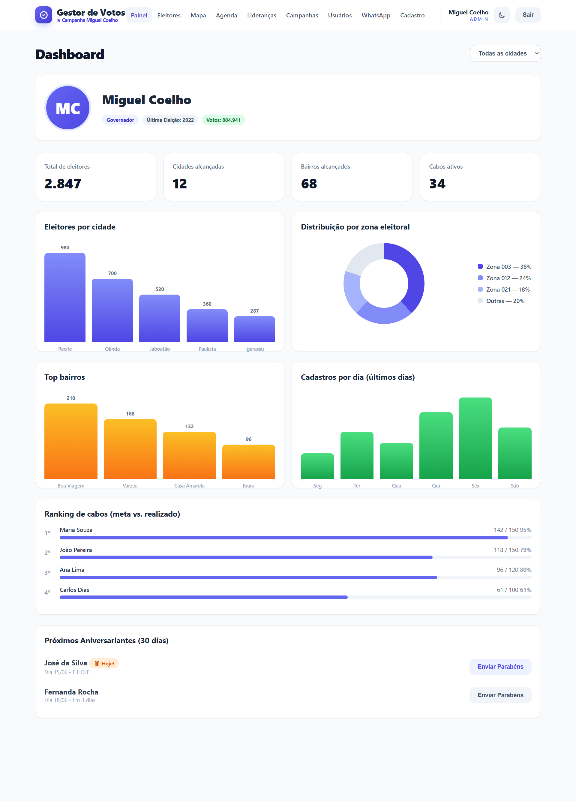
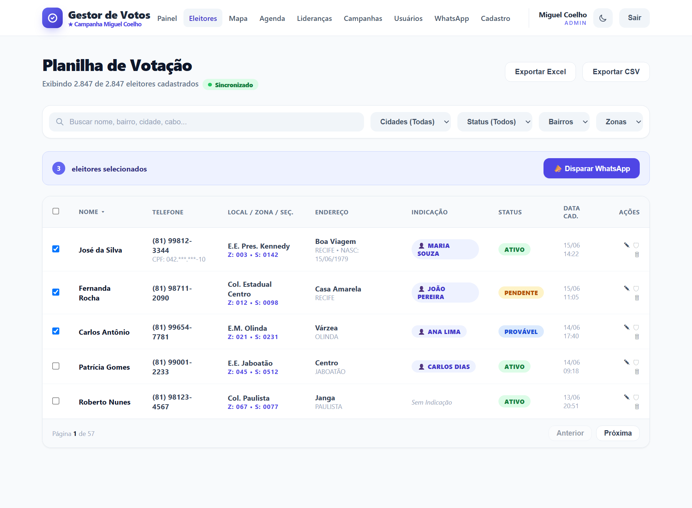
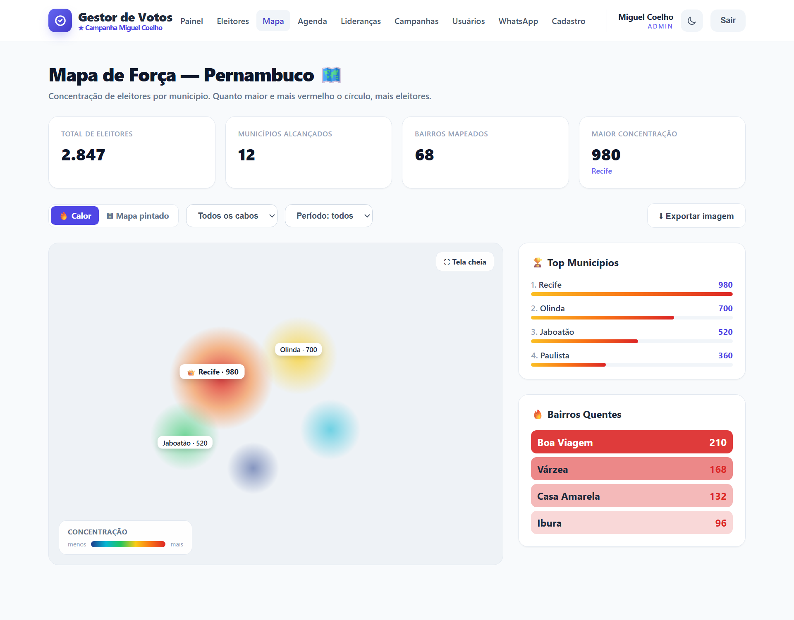
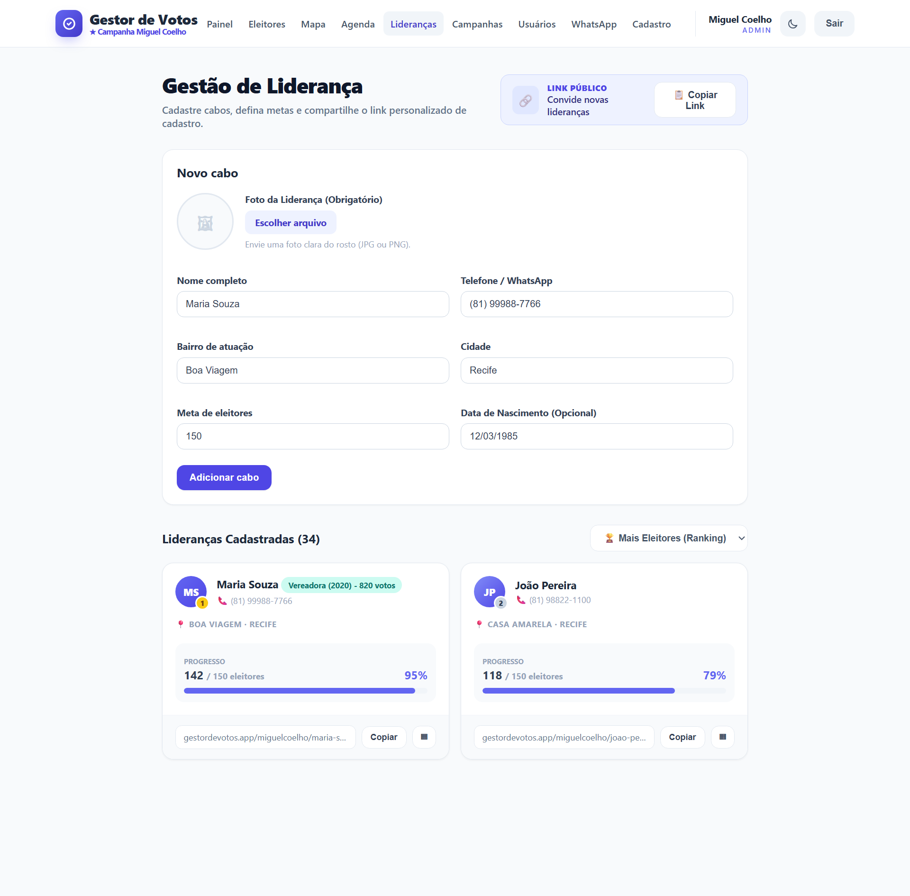
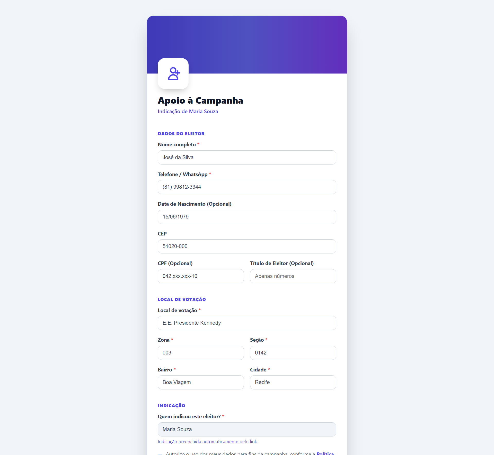
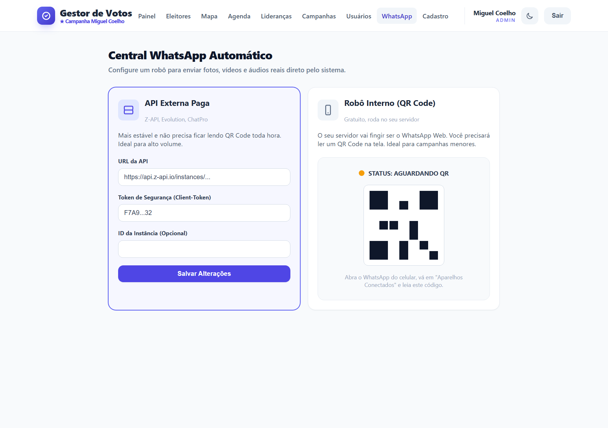

Cadastre eleitores em tempo real, organize suas lideranças, visualize sua força no mapa e converse pelo WhatsApp — tudo em um só lugar.

Um sistema pensado para o dia a dia de candidatos, coordenadores e cabos eleitorais — simples para quem está na rua, poderoso para quem comanda.
Indicadores, gráficos e ranking atualizados automaticamente. Saiba quantos eleitores você tem, onde eles estão e quais lideranças mais produzem.
Toda a sua base em uma planilha que sincroniza sozinha. Busque, filtre, edite e exporte sem sair da tela.

Mapa de calor e mapa pintado de Pernambuco mostram a concentração de eleitores por município e bairro. Filtre por cabo e por período.

Cadastre seus cabos eleitorais, defina metas e dê a cada um um link e QR Code personalizados. Todo cadastro feito por ele já entra vinculado automaticamente.

Um formulário leve e seguro que seus cabos compartilham no WhatsApp. Preenche bairro e cidade pelo CEP e já vincula a indicação automaticamente.

Conecte um robô e envie mensagens, fotos, vídeos e áudios reais direto pelo sistema — por API externa ou pelo seu próprio servidor via QR Code.

Cadastre eventos e convide automaticamente todos os eleitores de um bairro pelo WhatsApp.
Cada candidato é uma campanha isolada, com seus próprios eleitores, cabos e usuários totalmente separados.
Crie acessos para a equipe com perfis de permissão e vincule cabos aos seus próprios eleitores.
Registro das ações do sistema e anonimização de dados pessoais para conformidade legal.
Página pública onde novas lideranças se cadastram e já recebem seu link de indicação na hora.
Interface moderna e responsável que funciona perfeitamente no computador e no celular.
Permissões validadas no servidor e refletidas na interface, do candidato ao cabo na rua.
Centralize eleitores, lideranças e comunicação em uma plataforma feita para vencer.